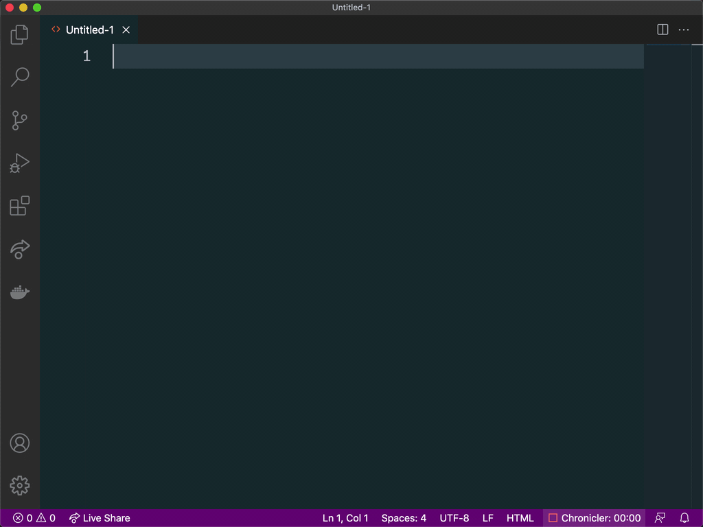

Visual Studio Code (VSCode)
VSCode is developed by Microsoft and, since the mid 2010s, has become a dominant visual code editor. It is Electron-based and can run on Windows, Mac or Linux. It also is open-source with a rigorous development cycle and has a large number of plug-ins, known as extensions. It also has become extremely popular, so software companies like Docker and ConsenSys will build their own VSCode extensions which you can download for free from VSCode's Marketplace.
You can install VSCode on Windows, Mac or Linux here.
VSCode is a good editor to learn to code on because these extensions can help with the learning process. In this section, we're going to point out a few benefits that VSCode ships with.
If you're on Windows 10, be sure to install WSL and integrate VSCode to run WSL.
Native Features
Here are a few features that ship with VSCode you can start using immediately:
-
Emmet Language
is a tool that allows for high-speed develompent of HTML, CSS and other
structured languages. VSCode supports Emmet out of the box, you can read
more about
Emmet abbreviations here
and
Emmet and VSCode here.
The images below show how Emmet assists with development:


-
Scrollbar Navigation
Sometimes you can be dealing with a large codebase. On a single monitor,
there isn't a lot of real estate and it can be hard to find your place.
VSCode's navigation bar has some helpful features:
- In "Bar Mode," (the standard scrollbar), VSCode can annotate where your cursor is, where you've made changes, instances of a search term or other markers. Read about the scroll bar here.
- In "Map Mode," the scrollbar shows a small version of the entire code. You can adjust how wide the scrollbar is and you can enable a larger preview that opens when you hover. You can also scroll using the map mode scrollbar just as you do a regular scrollbar. Read more about map mode here.
- Split pane Another way to navigate a long file or easily toggle between related files is to use side-by-side editing. VSCode allows you to split the editor horizontally or vertically any number of times. You can move files between the panes depending on what you need to see! Read more about side-by-side editing here.
-
Multiple Cursors
If you need to edit something exactly the same in multiple places,
VSCode allows you to use create multiple cursors which will all follow
your keyboard commands. For more information about multiple cursors (and
multiple selections),
click here.
See the image below for an example:

- Opening a Terminal VSCode incorporates your computer's terminal in its application. You can open the terminal, which is opened in the current directory, by pressing CTRL + `, or navigating in the menu to "Terminal > New Terminal"
-
Launching From Command Line
Another nice trick of VSCode is launching in directly from your own
command line. Once you've configured your machine properly, you can
navigate to a folder in your computer you'd like to work in and simply
run
code .. This will open VSCode and load the directory and all its children. Read more about setting this up here.
We're just scratching the surface of VSCode. You can read through their "Getting Started" page, which includes Tips and Tricks here. If video tutorials are more your thing, there's a nice VSCode walkthrough from FreeCodeCamp here.